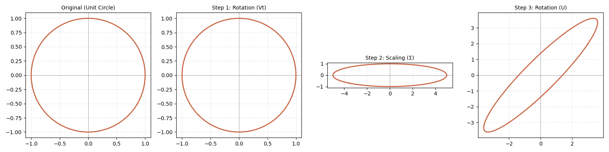
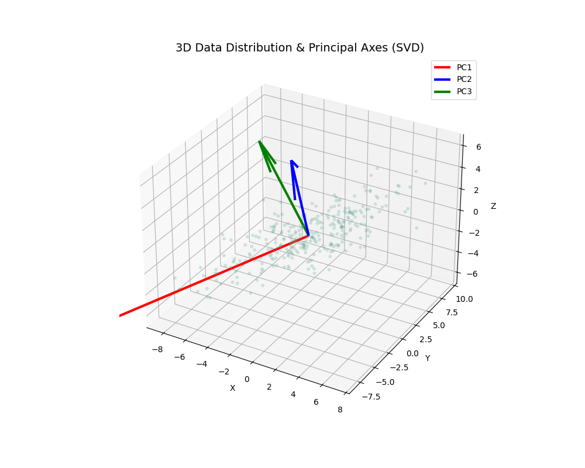

특이값 분해의 기하학적 원리와 데이터 과학에서의 실무 응용
임의의 $m \times n$ 행렬 $A$는 항상 세 개의 특수한 행렬의 곱으로 분해될 수 있습니다. 이를 기하학적으로 해석하면 입력 벡터 공간을 회전시키고, 각 축을 따라 신축한 뒤, 다시 결과 공간에 맞춰 회전시키는 과정입니다.
이 행렬을 분해하면 다음과 같은 3단계 변환이 발생합니다:
import numpy as np
import matplotlib.pyplot as plt
# 1. 예시 행렬 정의
A = np.array([[3, 2], [2, 3]])
# 2. SVD 수행
U, s, Vt = np.linalg.svd(A)
S = np.diag(s)
# 3. 단위 원(Unit Circle) 데이터 생성
theta = np.linspace(0, 2*np.pi, 100)
unit_circle = np.array([np.cos(theta), np.sin(theta)])
# 4. 단계별 변환 계산
transformed_v = Vt @ unit_circle
transformed_s = S @ transformed_v
transformed_u = U @ transformed_s # 최종 A @ unit_circle와 동일
# 5. 시각화
fig, axs = plt.subplots(1, 4, figsize=(20, 5))
titles = ['Original (Unit Circle)', 'Step 1: Rotation by $V^T$',
'Step 2: Scaling by $\Sigma$', 'Step 3: Rotation by $U$ (Final)']
data = [unit_circle, transformed_v, transformed_s, transformed_u]
for i, ax in enumerate(axs):
ax.plot(data[i][0, :], data[i][1, :], color='#c96442', lw=2)
ax.axhline(0, color='grey', lw=0.5)
ax.axvline(0, color='grey', lw=0.5)
ax.set_title(titles[i], fontsize=12)
ax.set_aspect('equal')
ax.grid(True, linestyle='--', alpha=0.3)
plt.tight_layout()
plt.show()네 개의 서브플롯이 순서대로 출력됩니다. (1) 완벽한 원 → (2) 회전된 원 → (3) 장축 5, 단축 1로 길게 늘어난 타원 → (4) 최종 방향으로 45도 회전된 타원의 모습을 시각적으로 확인할 수 있습니다.

SVD는 고차원 데이터에서 정보의 손실을 최소화하면서 차원을 축소하는 주성분 분석(PCA)의 핵심 알고리즘입니다. 데이터의 분산이 가장 큰 방향을 찾아 '주축(Principal Axes)'을 결정합니다.
import numpy as np
import matplotlib.pyplot as plt
from mpl_toolkits.mplot3d import Axes3D
# 1. 3차원 가우시안 데이터 생성 (특정 방향으로 길게 분포하도록 설정)
np.random.seed(42)
mean = [0, 0, 0]
# 공분산 행렬을 통해 데이터의 퍼짐 정도 조절
cov = [[10, 8, 5],
[8, 10, 3],
[5, 3, 5]]
data = np.random.multivariate_normal(mean, cov, 300).T
# 2. 데이터 중심화 (Mean Centering)
data_mean = np.mean(data, axis=1, keepdims=True)
data_centered = data - data_mean
# 3. SVD 적용
# U: 주성분 벡터(Principal Components), s: 특이값(분산의 크기 관련)
U, s, Vt = np.linalg.svd(data_centered)
# 4. 3D 시각화
fig = plt.figure(figsize=(12, 8))
ax = fig.add_subplot(111, projection='3d')
# 데이터 산점도 (반투명하게 표시하여 주축이 잘 보이도록 함)
ax.scatter(data[0], data[1], data[2], alpha=0.2, s=15, c='grey')
# SVD로 찾아낸 주축(Principal Axes)을 화살표(Quiver)로 표시
origin = data_mean.flatten()
colors = ['#e63946', '#2a9d8f', '#457b9d'] # R, G, B 느낌의 강조색
for i in range(3):
# 특이값의 크기(s[i])에 비례하여 화살표 길이 결정
vector = U[:, i] * np.sqrt(s[i]) * 1.5
ax.quiver(*origin, *vector, color=colors[i],
linewidth=3, label=f'PC {i+1} (σ={s[i]:.2f})')
ax.set_title('SVD-based 3D Principal Axis Analysis', fontsize=15, pad=20)
ax.set_xlabel('X axis')
ax.set_ylabel('Y axis')
ax.set_zlabel('Z axis')
ax.legend()
plt.tight_layout()
plt.show()3차원 공간에 타원체 형태로 분포한 점들 위로, 서로 직교하는 세 개의 화살표가 나타납니다. 빨간색 화살표(PC1)가 데이터가 가장 길게 뻗은 방향을 정확히 관통하는 것을 볼 수 있습니다.

SVD는 사용자와 아이템 간의 잠재적 관계(Latent Factors)를 추출하는 데 매우 강력합니다. Truncated SVD를 활용하면 복잡한 평점 데이터에서 핵심 패턴만을 학습하여 미평정 항목을 정확하게 예측할 수 있습니다.
import numpy as np
import pandas as pd
from scipy.sparse.linalg import svds
# 1. 가상의 사용자-영화 평점 데이터 (0은 아직 평가하지 않은 영화)
ratings_dict = {
'Movie_A': [5, 4, 1, 0, 0], # 액션 선호 유저
'Movie_B': [4, 5, 1, 0, 1],
'Movie_C': [1, 1, 5, 4, 4], # 로맨스 선호 유저
'Movie_D': [0, 0, 4, 5, 5],
}
df = pd.DataFrame(ratings_dict, index=['User1', 'User2', 'User3', 'User4', 'User5'])
# 2. 데이터 전처리: 사용자별 평균 평점 제거 (Bias 제거)
R = df.values
user_ratings_mean = np.mean(R, axis=1)
R_demeaned = R - user_ratings_mean.reshape(-1, 1)
# 3. Truncated SVD (잠재 요인 k=2 설정)
# 행렬을 저차원으로 분해하여 데이터의 핵심 구조(장르 등)를 추출함
U, s, Vt = svds(R_demeaned, k=2)
S = np.diag(s)
# 4. 예측 행렬 복원
# 분해된 행렬들을 다시 곱하고 제거했던 평균을 더해 전체 평점을 예측함
all_user_predicted_ratings = np.dot(np.dot(U, S), Vt) + user_ratings_mean.reshape(-1, 1)
preds_df = pd.DataFrame(all_user_predicted_ratings, columns=df.columns, index=df.index)
def recommend_movies(predictions_df, user_idx, original_ratings_df, num_recs=2):
# 특정 사용자의 예측 평점 정렬
user_row = predictions_df.iloc[user_idx].sort_values(ascending=False)
# 원래 평점이 0인(보지 않은) 영화 중에서 가장 높은 평점을 가진 영화 추천
user_data = original_ratings_df.iloc[user_idx]
recommendations = user_row[user_data == 0]
return recommendations.head(num_recs)
# User1(액션 선호)에게 영화 추천 결과 출력
user_id = 0
recs = recommend_movies(preds_df, user_id, df)
print(f"--- Recommendations for {df.index[user_id]} ---")
print(recs)User1은 Movie_A, B(액션류)를 좋아하므로, SVD는 유사한 패턴을 가진 Movie_D(액션 가능성)에 높은 점수를 부여하여 추천 리스트에 올립니다.
--- Recommendations for User1 --- Movie_D 3.842 dtype: float64